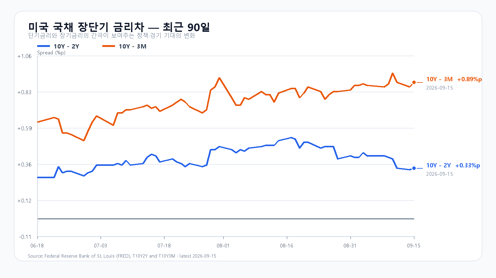
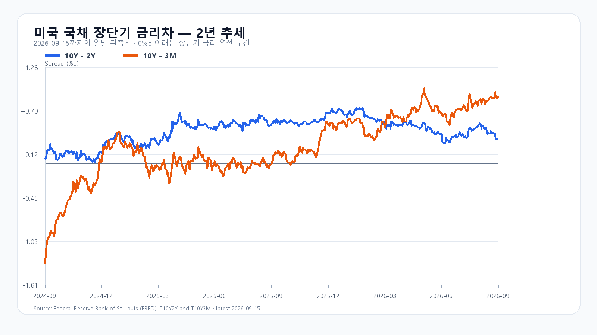

미국 반도체주는 전날 급락 뒤 소폭 반등했지만 뉴욕증시 전체는 다시 밀렸다. 유가 급등과 미 국채 10년물 5% 돌파, FOMC 금리 인상 전망이 동시에 주식의 할인율과 기업 비용을 끌어올렸다. 오늘 KOSPI는 반도체의 제한적 회복보다 6,600선에서 외국인 매도를 얼마나 흡수하는지가 더 중요하다.
9월 15일 미국장에서 다우는 0.63%, S&P 500은 0.45%, 나스닥은 0.78% 하락했다. WTI는 4.4%, 브렌트는 2.9% 올랐고 미 국채 10년물은 장중 5%를 넘었다. 시장은 9월 16일 FOMC에서 25bp 금리 인상이 나올 확률을 94.5%로 반영했다. 에너지 가격과 금리가 함께 오르면 한국에는 원가·환율·성장주 할인율의 세 경로로 부담이 전달된다. Reuters.
반도체의 반등 폭은 작았다. QQQ는 0.65%, TQQQ는 1.98% 내렸지만 SOXX는 0.29%, SMH는 0.11% 올랐다. Nvidia는 0.57%, AMD는 2.19%, Micron은 0.39% 상승했고 Broadcom은 1.58% 하락했다. 필라델피아 반도체지수도 0.4% 오르는 데 그쳐 전날 급락을 의미 있게 되돌리지 못했다. 다만 월요일 미국 반도체 급락은 화요일 한국장에 이미 상당 부분 반영됐다. 같은 충격을 오늘 하락 요인으로 전부 다시 더하지 않는다.
메모리 현물은 주가보다 안정적이다. TrendForce의 9월 15일 표에서 DDR5 16Gb 4800/5600 평균은 54.40달러로 0.12% 올랐다. DDR4 16Gb 3200은 0.14%, DDR4 8Gb 3200은 0.08% 내렸다. 품목별 혼조는 HBM 계약가격이나 서버 메모리 수요 붕괴를 뜻하지 않는다. 오늘도 메모리 펀더멘털과 주식 수급을 나눠 봐야 한다. TrendForce.
미국 장단기 금리차는 9월 15일 기준 10년-2년 +0.33%포인트, 10년-3개월 +0.89%포인트다. 곡선의 기울기보다 10년물 절대 수준이 5%를 넘었다는 사실이 반도체 밸류에이션에는 더 직접적인 부담이다. 장기금리가 5% 아래로 빠르게 내려오거나 유가가 상승분을 반납하기 전에는 주가 반등의 상단을 넓게 잡기 어렵다. FRED 10년-2년, FRED 10년-3개월.
전 거래일 KOSPI는 6,627.26으로 0.85% 하락했다. 장중 고가는 6,715.46, 저가는 6,582.20이었다. 삼성전자는 0.60%, SK하이닉스는 0.88% 올랐지만 지수는 약세로 마감했다. 반도체 반등이 시장 전체 매도를 되돌리지 못했다는 뜻이다. KODEX 레버리지는 99,690원으로 2.36% 내렸다. KOSPI, KODEX 레버리지.
오늘 기본 종가 범위는 6,500~6,650, 확률은 45%로 둔다. 6,500을 지키되 6,650 아래에서 외국인 매도를 소화하는 흐름이다. 6,650을 회복하고 외국인 현물과 프로그램이 함께 순매수로 돌아서면 강세 범위 6,650 초과~6,800으로 전환할 수 있다. 반대로 6,500을 깨고 두 수급이 모두 순매도라면 약세 범위 6,300~6,500 미만의 가능성이 커진다.
| 종가 시나리오 | 범위·확률 | 15시 20분 성립 조건 | 무효화·전환 신호 |
|---|---|---|---|
| 기본 | 6,500~6,650, 45% | 6,500 이상 · 6,650 이하 · 외국인 순매도 1조원 이내 | 범위 이탈 또는 외국인 순매도 1조원 초과 |
| 강세 | 6,650 초과~6,800, 20% | 6,650 초과 · 외국인 현물 순매수 · 프로그램 전체 순매수 | 6,650 이하 또는 수급 반전 |
| 약세 | 6,300~6,500 미만, 35% | 6,500 미만 · 외국인 현물 순매도 · 프로그램 전체 순매도 | 6,500 회복 또는 수급 반전 |
종가 범위와 별도로 남은 장의 예상 고저 범위는 6,200~6,900으로 둔다. 두 전체 범위의 목표 신뢰수준은 90%이며 실제 적중률을 뜻하지 않는다. 대응 점수는 공격 15, 관망 40, 방어 45다. KODEX 레버리지는 전일 저가 98,695원을 1차 지지, 전일 종가 99,690원을 반등 기준, 전일 고가 103,230원을 저항으로 본다. 가격이 많이 빠졌다는 이유만으로 지지 확인 전에 대응 강도를 높이지 않는다.
장중에는 첫 30분의 6,500선 방어, 삼성전자·SK하이닉스의 동반 방향, 외국인 현물과 프로그램의 같은 방향 여부를 차례로 확인한다. 오늘 21시 30분에는 미국 8월 소매판매와 수출입물가가 발표된다. FOMC 결정과 경제전망은 9월 17일 03시, 기자회견은 03시 30분 KST다. 미 Census, BLS, 연준.
개장 직후 가격
| 항목 | 가격·변화 | 출처 시각 |
|---|---|---|
| KOSPI | 6,619.74 · -0.11% | 2026-09-16T09:10:00+09:00 |
| KOSDAQ | 804.33 · -0.99% | 2026-09-16T09:10:00+09:00 |
| KODEX 레버리지 | 99,905원 · 0.22% | 2026-09-16T09:10:00+09:00 |
| 삼성전자 | 248,500원 · 0.00% | 2026-09-16T09:10:00+09:00 |
| SK하이닉스 | 1,698,000원 · 0.47% | 2026-09-16T09:10:00+09:00 |
| 달러/원 하나은행 고시 | 1,365.20원 · 0.11% | 2026-09-16T09:09:53+09:00 |
| Nasdaq100 선물 | 29,272.50 · +0.088% | 2026-09-16T09:01:23+09:00 · 지연 시세 |
| S&P500 선물 | 7,665.25 · +0.121% | 2026-09-16T09:01:21+09:00 · 지연 시세 |
| 브렌트 선물 | 108.39 · -0.331% | 2026-09-16T09:01:06+09:00 · 지연 시세 |
| WTI 선물 | 105.41 · -0.397% | 2026-09-16T09:01:15+09:00 · 지연 시세 |
KOSPI · KODEX · 환율 · Nasdaq100 선물 · S&P500 선물 · 브렌트 · WTI
국내 가격은 개장 직후 스냅샷, 환율은 은행 고시, 미국 선물은 지연 시세다.

